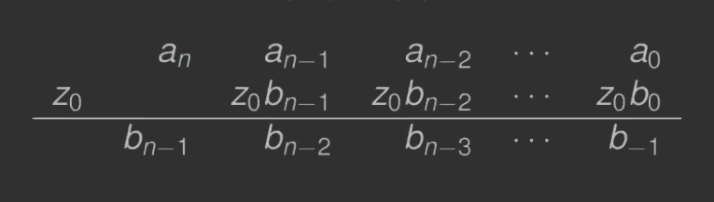
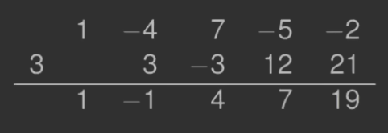
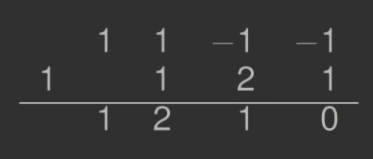

- 1. DEF
- 2. Zasadnicze Twierdzenie Algebry
- 3. Twierdzenie#2
- 4. Notacja s(z)
- 5. Twierdzenie#3
- 6. Algorytm Hornera
- 7. Zastosowanie metody Newtona
- 7.1.
Horner(n,z0,a0,…,an)→( p(z0), p′(z0) ):
- 7.2.
Newton (n,z0,a0,…,an,M,ϵ)→( p(r),p′(r),r ):
- 8. Twierdzenie#4
- 9. DEF: Deflacja czynnikiem liniowym
1. DEF
Dany jest wielomian w postaci naturalnej p(z)=anzn+an−1zn−1+⋯+a2z2+a1z+a0,an=0 gdzie współczynniki ak i zmienna z mogą być liczbami zespolonymi (ak,z∈C).
2. Zasadnicze Twierdzenie Algebry
Dowolny wielomian stopnia n≥1 nad ciałem liczb zespolonych ma co najmniej jeden pierwiastek zespolony.
Jeśli ak∈R, to pierwiastki występują w parach sprzężonych. Dzieląc wielomian p(z)(n≥1) przez czynnik liniowy (z−c) otrzymamy p(z)=(z−c)q(z)+R gdzie - q(z) jest wielomianem stopnia n−1 - R jest resztą.
Jeśli z=c, to p(c)=R.
Jeśli c jest pierwiastkiem wielomianu p, to R=0 oraz p(z)=(z−c)q(z).
Jeśli r1 jest pierwiastkiem p, to p możemy zapisać p(z)=(z−r1)q1(z).
Zgodnie z twierdzeniem q1 ma pierwiastek r2 (chyba że jest wielomianem zerowego stopnia). Możemy więc podzielić q1 przez czynnik liniowy z−r2 i otrzymamy p(z)=(z−r1)(z−r2)q2(z).
W każdym kroku tego procesu zmniejszamy stopień qk o jeden, aż qn będzie stałą. Ostatecznie otrzymamy rozkład p p(z)=(z−r1)(z−r2)⋯(z−rn)qn.
Zatem p ma n pierwiastków zespolonych (każdy pierwiastek liczymy tyle razy, ile wynosi jego krotność).
Jeśli ak∈R, pierwiastki występują w parach sprzężonych.
3. Twierdzenie#2
Wszystkie zera wielomianu p(z)=anzn+an−1zn−1+⋯+a2z2+a1z+a0 leżą wewnątrz koła {z∈C:∣z∣<ρ=1+∣an∣−1⋅0≤k<nmax∣ak∣}.
3.1. Przykład
Znaleźć koło zawierające wszystkie zera wielomianu p(z)=z4−4z3+7z2−5z−2.
Promień koła ρ=1+∣a4∣−1⋅max0≤k<4∣ak∣=8.
4. Notacja s(z)
Rozpatrzmy funkcję s(z)=zn⋅p(z1).
Wówczas s(z)=zn⋅(an(z1)n+an−1(z1)n−1+⋯+a0)==an+an−1z+an−2z2+⋯+a0zn.
Oczywiście p(z0)=0⟺s(z01)=0 dla z0=0.
5. Twierdzenie#3
Jeżeli wszystkie zera wielomianu s leżą w kole {z∈C:∣z∣≤ρ}, to wszystkie niezerowe miejsca zerowe wielomianu ρ leżą na zewnątrz koła {z∈C:∣z∣<ρ−1}.
5.1. Przykład
Znaleźć koło, w którym nie ma zer wielomianu p p(z)=z4−4z3+7z2−5z−2.
Wielomian s ma postać s(z)=−2z4−5z3+7z2−4z+1
Zera s leżą w kole o promieniu ρ=1+∣a4∣−1⋅max0≤k<4∣ak∣=29. Zera p leżą na zewnątrz koła o promieniu 92. Stąd wszystkie zera wielomianu p leżą w pierścieniu 92<∣z∣<8.
6. Algorytm Hornera
Załóżmy, że wielomian p jest dany w postaci p(z)=anzn+an−1zn−1+⋯+a2z2+a1z+a0.
Wielomian p możemy zapisać w postaci p(z)=(…((anz+an−1)z+an−2)z+⋯)z+a0.
Dla danego z0 algorytm Hornera wyznacza p(z0) oraz wielomian q(z)=b0+b1z+⋯+bn−1zn−1 taki, że p(z)=(z−z0)q(z)+p(z0)
Nieznane współczynniki bk wielomianu q wyznaczamy z równania anzn+an−1zn−1+⋯+a2z2+a1z+a0==(z−z0)(b0+b1z+⋯+bn−1zn−1)+p(z0).
Otrzymujemy następujący układ równań: anan−1+z0bn−1a1+z0b1a0+z0b0=bn−1=bn−2⋯=b0=p(z0)
- Dane: n,z0,a0,…,an
- Wyniki: p(z0),b0,…,bn−1
- bn−1←an
for k←n−1 down to 0:
- bk−1←ak+z0bk
return b−1,b0,…,bn−1
W ręcznych obliczeniach p(z0) oraz q(z) użyteczna jest tabela

6.1. Przykład
Oblicz za pomocą algorytmu Hornera wartość wielomianu p w punkcie 3 i wielomian q(z).
p(z)=z4−4z3+7z2−5z−2.
Konstruujemy tabelę do ręcznych obliczeń

Czyli - p(3)=19 - q(z)=z3−z2+4z+7 - p(z)=(z−3)(z3−z2+4z+7)+19.
7. Zastosowanie metody Newtona
Przedstawimy teraz sposób wykorzystania metody Newtona do obliczania pierwiastków danego wielomianu p(z) zk+1=zk−p′(zk)p(zk).
Jak efektywnie obliczyć p(zk) oraz p′(zk)?
Po zróżnicowaniu równości p(z)=(z−z0)q(z)+p(z0) otrzymujemy p′(z)=q(z)+(z−z0)q′(z).
Następnie dla z=z0 otrzymujemy p′(z0)=q(z0).
Pochodną p′(z0) możemy więc obliczyć stosując algorytm Hornera używając współczynników bk wielomianu q(z).
7.1. Horner(n,z0,a0,…,an)→( p(z0), p′(z0) ):
- α←an
- β←0
for k←n−1 down to 0:
- β←α+z0β (obliczanie p′(z0))
- α←ak+z0α (obliczanie p(z0))
return α,β
7.2. Newton (n,z0,a0,…,an,M,ϵ)→( p(r),p′(r),r ):
for k←1 to M:
- [α,β]←
Horner(n,z0,a0,…,an) (obliczanie p(z0),p′(z0))
- z1←z0−βα (metoda Newtona)
if ∣z1−z0∣<ϵ:
return α,β,z1
8. Twierdzenie#4
Niech xk oraz xk+1 będą kolejnymi przybliżeniami skonstruowanymi przez metodę Newtona zastosowaną do wielomianu p stopnia n.
Wówczas istnieje miejsce zerowe wielomianu p oddalone od xk w płaszczyźnie zespolonej o co najwyżej n∣xk−xk+1∣.
8.1. Uwaga
W celu wyznaczenia pierwiastków zespolonych wielomianu p(z) za pomocą metody Newtona, musimy zaprogramować metodę Newtona w arytmetyce zespolonej.
9. DEF: Deflacja czynnikiem liniowym
Po wyznaczeniu pierwiastka r1 wielomianu p musimy wyznaczyć pozostałe pierwiastki r2,…,rn.
„Oddzielamy” więc obliczony pierwiastek r1, tzn. wyznaczamy wielomian q(z) stopnia n−1: p(z)=(z−r1)q(z).
Proces ten nazywamy deflacją.
Po znalezieniu pierwiastka r1 wielomianu p(z), np. metodą Newtona, stosujemy deflację czynnikiem (z−r1). Następnie wyznaczamy pierwiastek r2, np. metodą Newtona, zredukowanego wielomianu q1(z) i ponownie wykonujemy deflację czynnkiem (z−r2). Proces kontynuujemy aż wyznaczymy wszystkie pierwiastki.
Uwagi o deflacji
- pierwiastki powinny być obliczane w kolejności wzrastających modułów
- pierwiastki obliczamy z maksymalną graniczną dokładnością
- każdy obliczony pierwiastek r~ zredukowanego wielomianu q(z) poprawiamy przez zastosowanie metody (np. Newtona) do wielomianu p(z) z punktem startowym r~. Dopiero po tym kroku stosujemy deflację
9.1. Przykład
Niech r1=1 będzie obliczonym pierwiastkiem wielomianu p(z)=z3+z2−z−1. Wykonać deflację czynnikiem (z−1), tzn. wyznaczyć wielomian q(z) stopnia 2.
Aby wyznczayć q stosujemy algorytm Hornera. Konstruujemy tabelę do ręcznych obliczeń:

p(1)=0,q(z)=z2+2z+1, p(z)=(z−1)(z2+2z+1)